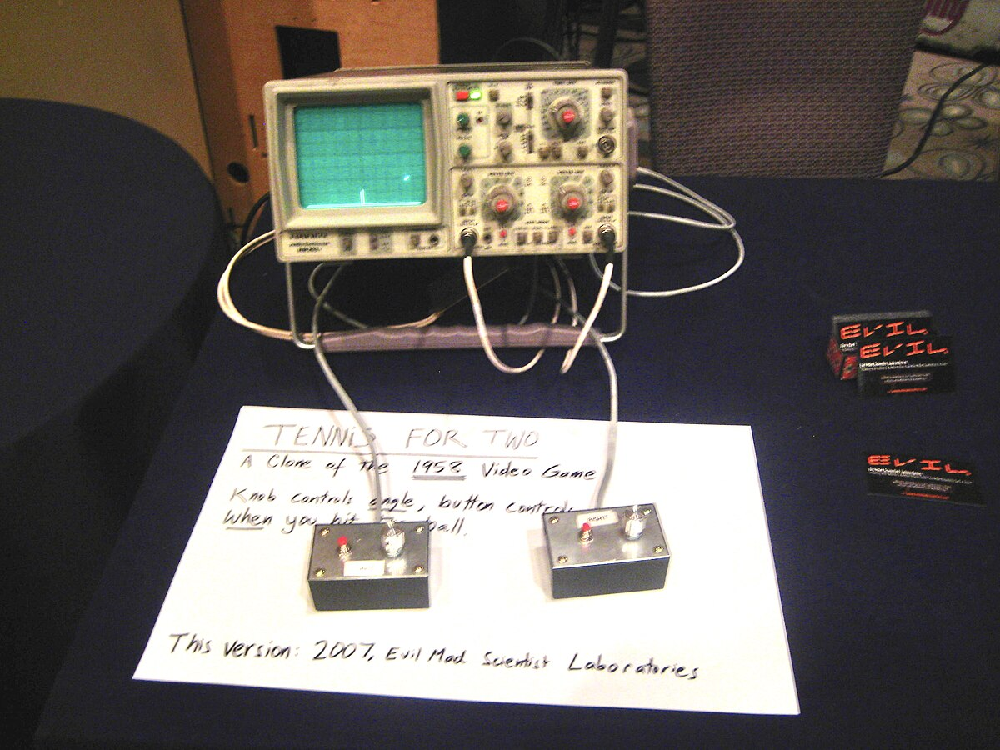
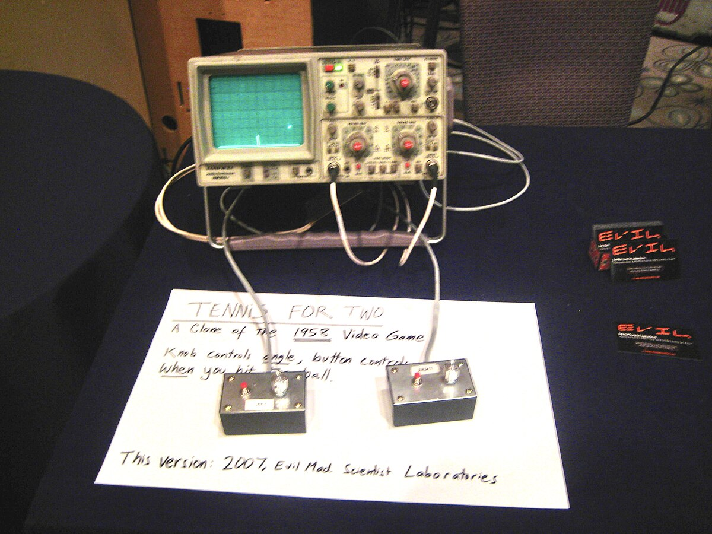

¿Qué es Tennis for Two?
Tennis for Two es considerado uno de los primeros videojuegos jamás creados. Fue desarrollado en 1958 por el físico estadounidense William Higinbotham en el Laboratorio Nacional de Brookhaven. Su objetivo era crear una demostración interactiva para los visitantes del laboratorio durante un día de puertas abiertas.
El juego simulaba un partido de tenis visto de lado, con dos jugadores que controlaban la trayectoria de la pelota con perillas. La imagen se mostraba en un osciloscopio, una pantalla científica que no estaba pensada originalmente para juegos.
Aunque simple, "Tennis for Two" fue una idea revolucionaria que anticipó el potencial del entretenimiento interactivo. No fue comercializado, pero sentó un precedente para el desarrollo posterior de la industria del videojuego.
Galería de imágenes
 
